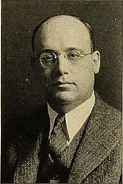

Jesse Douglas | |
|---|---|
 Douglas in c. 1932 | |
| Born | July 3, 1897 New York City, U.S. |
| Died | September 7, 1965 (aged 68) New York City, U.S. |
| Alma mater | City College of New York (BA) Columbia University (PhD) |
| Known for | Solution to Plateau's problem |
| Spouse |
Jessie Nayler (m. 1940–1955) |
| Children | Lewis Philip Douglas |
| Awards | Fields Medal (1936) Bôcher Memorial Prize (1943) |
| Scientific career | |
| Fields | Calculus of variations Differential geometry |
| Institutions | City College of New York |
| Edward Kasner | |
Jesse Douglas (July 3, 1897 – September 7, 1965) was an American mathematician and Fields Medalist known for his general solution to Plateau's problem.
He was born to a Jewish family[1] in New York City, the son of Sarah (née Kommel) and Louis Douglas. He attended City College of New York as an undergraduate, graduating with honors in Mathematics in 1916. He then moved to Columbia University as a graduate student, obtaining a PhD in mathematics in 1920.[2]
Douglas was one of two winners of the first Fields Medals,[3] awarded in 1936. He was honored for solving, in 1930, the problem of Plateau, which asks whether a minimal surface exists for a given boundary. The problem, open since 1760 when Lagrange raised it, is part of the calculus of variations and is also known as the soap bubble problem. Douglas also made significant contributions to the inverse problem of the calculus of variations. The American Mathematical Society awarded him the Bôcher Memorial Prize in 1943.
Douglas worked at Columbia University, the Massachusetts Institute of Technology and the Institute for Advanced Study.[4] Later he became a full professor at the City College of New York where he taught until his death. At the time CCNY only offered undergraduate degrees and he taught the advanced calculus course.
{kind=link}